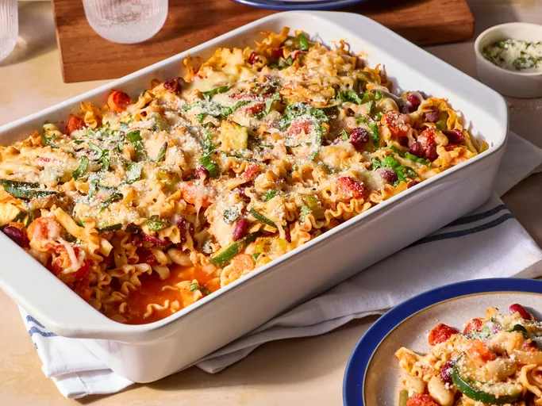

Home
Minestrone Casserole

This baked ziti is always a hit! A lady I worked with brought this in one day, and everyone loved it. Now it is the favorite of all my dinner guests. I have made this also without the meat, and it is well received.
Ingredients
- 4 cups dried mafalda pasta (mini lasagna noodles)
- 2 tablespoons olive oil
- 2 carrots, sliced
- 2 stalks celery, sliced/li>
- 1 onion, chopped
- 2 cloves garlic, minced
- 1 (15-ounce) can red kidney beans
- 1 (15-ounce) cancannellini beans
- 1 (15-ounce) can diced tomatoes with Italian herbs
- 1 (15-ounce) can tomato sauce
- 1 cup frozen cut green beans
- ½ cup grated Parmesan cheese, divided
- 1 teaspoon Italian seasoning
- ½ teaspoon salt
- ¼ teaspoon freshly ground black pepper
- 1 cup shredded mozzarella cheese
- chopped fresh basil and/or oregano
Steps
- Gather all ingredients.
- Preheat the oven to 350 degrees F (180 degrees C). Lightly coat a 3-quart baking dish with nonstick cooking spray.
- Bring a large pot of water to a boil. Add pasta and cook, covered, for the minimum time according to package directions. Drain and transfer to a large bowl.
- Meanwhile, heat oil in a large skillet over medium heat. Add onion, carrots, and celery; cover and cook, stirring occasionally, until carrots are just tender, 5 to 8 minutes. Add zucchini and garlic. Cook and stir 1 minute more.
- Add carrot mixture, beans, tomatoes, green beans, tomato sauce, 1/4 cup Parmesan cheese, Italian seasoning, salt, and pepper to the bowl of pasta. Stir well to combine. Transfer pasta mixture to the prepared dish and cover with foil.
- Bake in the preheated oven for 20 minutes. Remove foil and top with mozzarella cheese; continue baking until heated through and cheese is melted,10 to 15 minutes. Top each serving with remaining Parmesan cheese and sprinkle with fresh herbs.